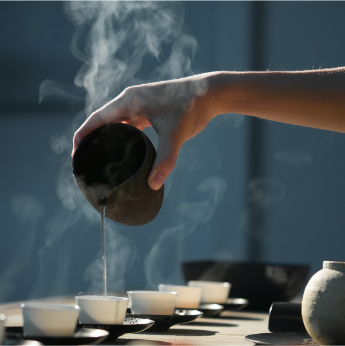
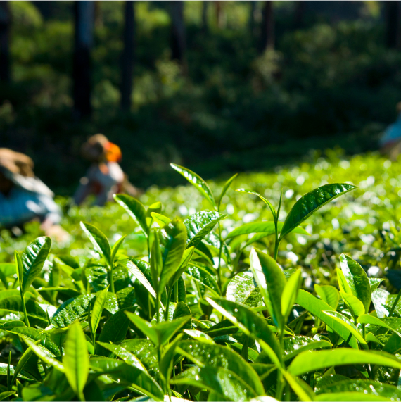

最新消息

茶葉訂閱服務上市
全新的茶葉訂閱服務，定期收到蟬茗嚴選的優質茶葉，品茶指南以及專屬的優惠商品與折扣。
2023.07.20

世界茶賞冠軍一鳴驚人
蟬茗榮獲世界茶賞大賽「冠軍」。本店招牌蜜香綠茶「蟬茗翠玉」，以獨特的天然蜜香顛覆傳統綠茶，在激烈角逐中脫穎而出。
2023.06.26

揭密採茶首部曲
茶葉的採摘是整個過程的第一步。一般在春季或夏季，茶樹新芽嫩葉生長茂盛時進行採摘。
2023.06.17花茶系列全新上市
將茶葉的自然香氣與絢爛花朵相融，蟬茗推出全新的「花茶系列」，繽紛的花茶茶葉將帶給您全新的品茶體驗。
2023.05.10